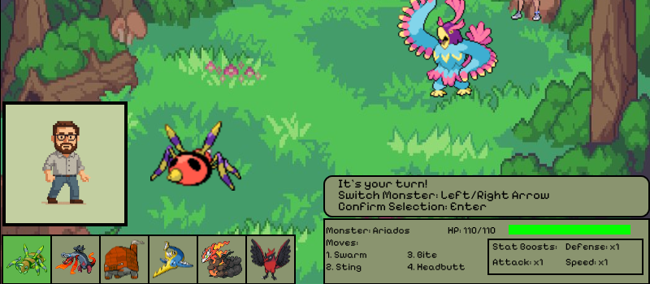

Monstermon Bronze
A retro monster battler for the browser, built by a five-person team over eight weeks of Scrum sprints. I led UI development and built much of the interface.
View code
The roster panel from the battle screen. Team code, mostly mine.
/**
* Displays the user's roster on the battle screen.
*/
#showRoster() {
// Display for roster panel
rectMode(CENTER);
fill('#8A946F');
stroke('black');
strokeWeight(2);
let rosterSpace = 32;
for (let x = 0; x < 6; x++) {
rect(rosterSpace, height - 32, 60, 60);
rosterSpace += 60;
}
// display roster sprites
let spacing = 60;
let x = 32;
let y = 568;
for (let j = 0; j < playerRoster.maxSize; j++) {
image(playerRoster.next().sprite_front, x, y);
x += spacing;
}
// selection square is yellow until a selection is made
let r, g, b;
if (batEng.turn && batEng.switchAllowed) {
// If the current roster rotation is on the Player's current monster
// make the selection box green
if (playerRoster.peek() == batEng.currentMonsterPlayer) {
r = 0;
g = 255;
b = 0;
}
// Otherwise, make selection box yellow
else {
r = 255;
g = 251;
b = 0;
}
if (playerRoster.peek().current_hp == 0) { // Selecton box is red if monster is unavailable
r = 255;
g = 0;
b = 0;
}
}
fill(r, g, b, 80)
rect(32, height - 32, 60, 60);
}Course project (CS 345).